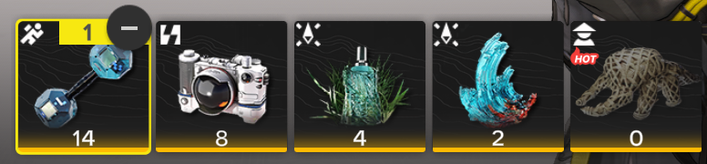

Lore
Tangtang es un 6★ crio Lanzador Operador y el Jefe Supremo del Empalizada de Qingbo en Arknights: Endfield. Ella es una Cañón manual usuario que puede postularse Cryo Infliction icon.pngInflicción criogénica y reparte DMG a una multitud de enemigos. Su habilidad combinada se desencadena por Cryo Infliction icon.pngInflicciones criogénicas o Explosiones artísticas, y es capaz de mejorar Arts Susceptibility icon.pngSusceptibilidad artística y DMG se ocupó de las habilidades de batalla posteriores y de los últimos tiempos.

Perfil
"¡Tu Jefe Supremo está aquí! ¡Tú, tú y tú estáis todos bajo mis órdenes!" Tangtang, el Jefe Supremo de la empalizada de Qingbo. Es sencilla, valora la lealtad y actúa con un carácter libre y sin restricciones. Le encanta la libertad y jugar en el agua, pero odia la traición. Una vez que te reconozca como su amiga, hará todo lo posible para apoyarte. Cuando era niña, alguien desconocido colocó a Tangtang en una canasta de bambú y la llevó río abajo hasta Qingbo Stockade, donde fue adoptada por los Stockaders y se convirtió en una de las suyas. A los ojos de muchos, ella todavía es una niña que necesita mimos, pero en su corazón, hace tiempo que decidió asumir el futuro de Qingbo Stockade. A pesar de haber experimentado muchos reveses, sigue llena de pasión por el mundo. Para encontrar respuestas a sus preguntas y desarrollar mejor Qingbo Stockade, Tangtang se ha unido a Endfield Industries. "Mantenla alejada de Mi Fu, o las cosas podrían romperse" —, dice un operador de la Oficina Principal de Logística. "¿Me llamaste sólo para elogiarme? Bueno, entonces ponlo más grueso. ¡Me encanta escuchar la verdad!"
Models y gifs
